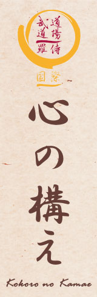

|  |
AIKIDO SZAKKIFEJEZÉSEKGYAKORLÁSI FORMÁK:
UKEMI WAZA:
ÁLLÁSOK, TESTHELYZETEK:
ASHI SABAKI (LÉPÉSEK):
TE SABAKI, TE NO UCHI:
TAI JUTSUKIHON OSAE / KATAME WAZA:
KIHON NAGE WAZA:
TÁMADÁSI FORMÁK:
FEGYVEREK - BUKI WAZA
AIKIKENTARTÁSOK:
KÉZTARTÁS, TE NO UCHI:
VÁGÁSOK:
AIKIJOKÉZTARTÁS, TE NO UCHI:
KIHON WAZA:
FEGYVERES GYAKORLÁSI FORMÁK:
EGYÉBREISHIKI /REI GI ZAHO - ETIKETT:
FELKÉSZÜLÉS A GYAKORLÁSHOZ:
GYAKORLÁSI MÓDOK:
IRÁNYOK ÉS VISZONYOK :
VEZÉNYSZAVAK:
ALAPELVEK:
|
| Tenjinchi Dojo | EBR International | Raji Ukemi Fitness | Aikido | Jodo | Iaido | Gyerekcsoport | Órarend | Tanárok Hírek/Események | Fotók / Videók | Olvasnivaló | Linkek |